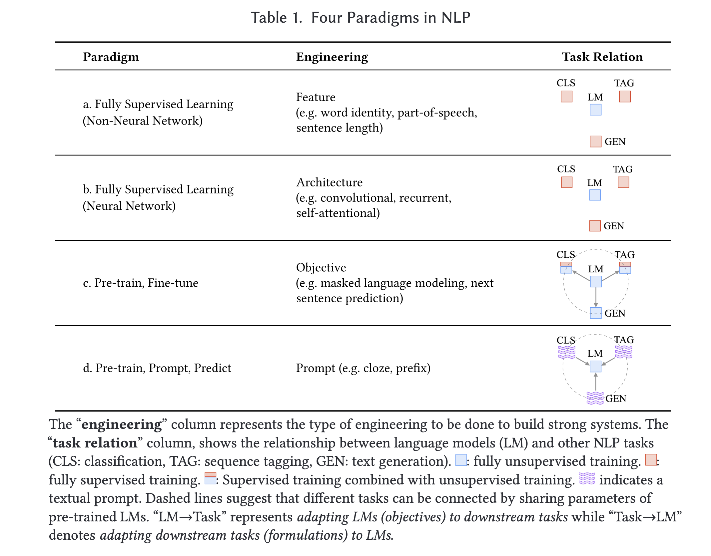
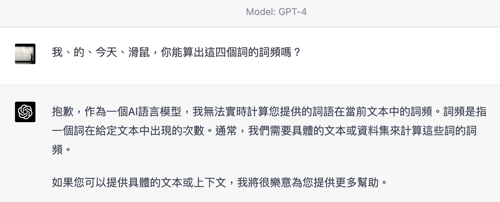
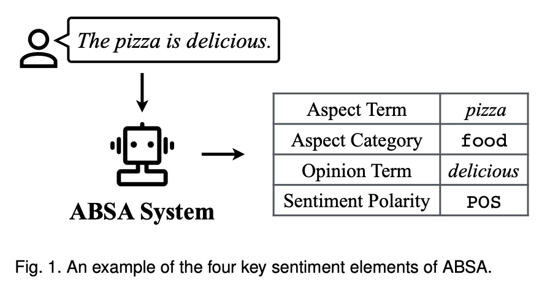
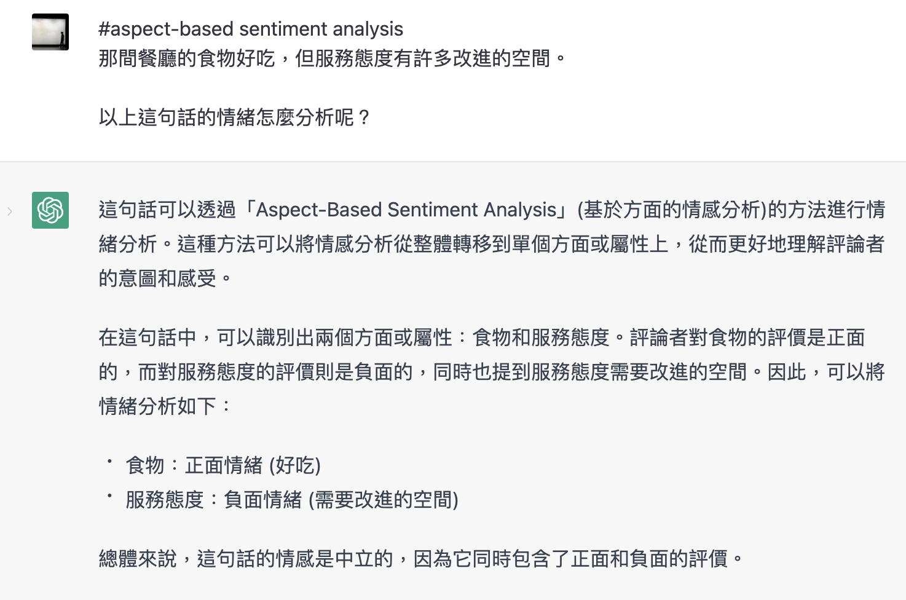

Week 6 Word Meaning (III)
今天主題
- 詞彙的情感意義
- 自動情緒分析 sentiment analysis
先跟大家分享一些想法
- 這個課程的時間點，剛好碰到 AI/NLP 的大變動，許多想法、演算模型都變成了歷史。
一覺醒來，之前才談過的大型語言模型封閉的問題，被打破了。cf. Stanford Alpaca (an Instruction-Tuned Chat-Style LLM, a.k.a., an Open-Source ChatGPT Alternative) colab, or local
- 我們到現在儘量留在概念的解釋（甚至微量的演算介紹），是讓大家可以先回到基礎，重新思考下一步。
這個範式轉移還在迅速發生中
Pretrain, Prompt, and Predict (P. Liu et al. 2023)

LLM 2023-

語言與知識資源作爲一種符碼專家模式是合理的 (在產學攻防的脈絡亦有其意義)。目前又稱 neuro-symbolic approach。
接下來的 Bakeoff (week 13) 我們會讓大家練習實作這個方向。
今天的打算
- 我們一起讀過 SLP-chap 25。
- FrameNet data analysis
詞彙的情感意義
- 情意共生（語言是用來表情達意）
相關的整組概念
包括了 deceptive opinions (詐騙意見)、emotion (情緒)、sentiment (情感)、subjectivity (主觀性)、stance (立場)、trustworthiness (可信度)、polarity (極性)、irony (反諷)、sarcasm (嘲笑)、humor (幽默)、propaganda (宣傳)、bias (偏見)、aggression (侵略性)、toxicity (毒性)、evaluation、appraisal、affect、mood、feelings、beliefs intention 等等。
先做概念的區分、實用出發的詞意區分，再來做實際的應用。
(NLP 中的) 情感分析任務
sentiment analysis \(\approxeq\) opinion mining (輿情分析)
情感分析是一種自然語言處理的技術，用於識別、提取、分析和評估文本中的情感。
所謂的情感，操作定義上是指一個人對於某個事物的看法 (opinion)、態度 (attitude)、情緒 (emotion)等。
應用上相當廣泛，從推薦系統到垃圾信件的過濾 (spam detection)，再到投票行爲研究、消費者行為分析、醫療等等。特別是常常跟社會網路 (social network) 結合。
比較常討論的情感分析
- sentiment is defined as an attitude, thought, or judgment prompted by feeling, whereas opinion is defined as a view, judgment, or appraisal formed in the mind about a particular matter.(B. Liu 2020)
- 我有點擔心今年全球的經濟。（我也是/我也蠻擔心的）
- 我認爲今年的經濟不會很好。（我同意/不同意）
Levels of Analysis
- document-level (文檔級)
- sentence-level (句子級)
- aspect-level (方面級)
實作上大部分都當成（類別 class、極度 polarity）分類問題。Aspect-based Sentiment Analysis 難度更高一點 (Zhang et al. 2022)。

但可能也沒那麼難了

多模態的情感計算
multimodal affective computing